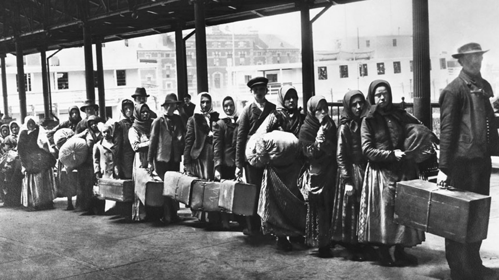
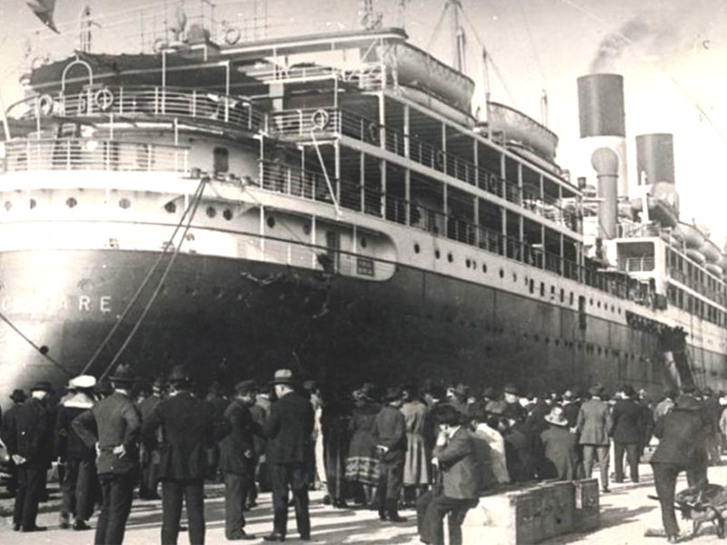

Orígenes en el país
Viajeros, comerciantes, militares, intelectuales procedentes de Inglaterra, España, Francia y Portugal, difundieron las logias en América del Sur. En Buenos Aires, las primeras noticias de la hermandad se remontan a fines del siglo XVIII. La primera logia en territorio argentino fue la "Logia Independencia", con protocolos de autorización otorgados por la Gran Logia General Escocesa de Francia. Dicha autorización data aproximadamente de 1795 y su sola denominación acusaba en sus integrantes una concepción autonomista para las tierras americanas.
Según refirió Francisco Guilló en su libro Episodios patrios, la logia funcionaba en un semiarruinado caserón, donde tiempo atrás el presbítero Juan Gutierrez Gonzalez y Aragón había levantado la Capilla de San Miguel, que posteriormente fue abandonada ante las dificultades que los grandes zanjones oponían para que los feligreses pudieran llegar a ella durante y después de las lluvias.
Por lo que toca a la "Logia Independencia", con ese nombre apareció otra logia, presidida por Julián B. Alvarez, en 1810, y es probable que no haya tenido continuidad con la homónima anterior. Esta logia dirigida por Alvarez es la que suministró los elementos básicos para la constitución de la Logia Lautaro, con la cual se inició el historial más importante de la masonería en la Emancipación.
El historiador Juan Canter negó la existencia de la "Logia Independencia", pero el coronel inglés Santiago Florencio Burke masón confesó, conto que cuando se fue de Buenos Aires, en 1809, fueron a despedirlo "un número de las principales personas del lugar, mis viejos amigos de Independencia", refiriéndose indudablemente a la logia.
Lappas refutó a Canter sosteniendo que "contrariamente a las afirmaciones contundentes de eruditos historiadores, hemos podido comprobar como cierta la existencia en Buenos Aires de una Logia denominada "Independencia", fundada a fines del siglo XVIII y que obtuvo Carta Constitutiva de la Gran de Loge Generale Ecossaise de France, cuerpo este que fue absorbido el 8 de enero de 1805 por el Gran Oriente de Francia, quedando la antes mencionada Logia en libertad de acción sobre su futuro".
Desde luego, existe en el tema masónico una enorme dificultad para lograr documentos y pruebas fehacientes. Esto es por la propia naturaleza de las sociedades cerradas o secretas, a lo que se suman las políticas represivas de particular violencia que se han empleado en su contra, al constituirse en baluarte de la revolución democrático-burguesa contra el absolutismo.
Lo ha señalado el español Miguel Morayta quien, al escribir la primera historia sistemática de la masonería peninsular, decia: "La historia interna de la masoneria española no se ha escrito aún y seguramente no se escribirá nunca; faltan y faltaran siempre los documentos del caso necesario. Durante muchos años las logias no extendieron actas de sus tenidas, ni firmaron siquiera expedientes de iniciación, se hacía indispensable no dejar rastros de sus actos. ¿Cómo, sin existir archivos narrar las vicisitudes de la Orden? Más asidero, si bien no del todo fácil, es historiar sus manifestaciones externas, sus actos públicos, es decir, sus trabajos intentados o cumplidos en el mundo profano".
Morayta sostuvo esta tésis después que la historiografía había comenzado a efectuar una severa crítica a la manía documentalista. Los documentos son importantes, pero mucho más lo es la facultad de comprensión del historiador. E1 eminente Leopoldo von Ranke lo explicó al señalar que la misión del historiador "no consiste tanto en reunir y acoplar hechos como en comprenderlos y explicarlos. La historia no es, como algunos piensan, obra de la memoria exclusivamente, sino que requiere ante todo agudeza y claridad de inteligencia. No lo pondrá en duda quien se de cuenta de cuan difícil es distinguir lo verdadero de lo falso y escoger entre muchas referencias la que pueda ser considerada como la mejor, o quien conozca aunque sólo sea de oídas aquella parte de la crítica que tiene su asiento en los aledaños de la histografía".
Constitución de la Gran Logia
La masonería Argentina, como se la conoce ahora, tuvo como partida de nacimiento la constitución de la Gran Logia, el 11 de Diciembre de 1857.
